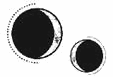

CAPÍTULO 24
Febre 1786
Para cuando Helena llegó a lo alto de la Torre de Alquimia, ya estaba amaneciendo. Lo que antaño había sido el hogar de la familia Holdfast en la ciudad ahora había pasado a ser la residencia de Luc, los paladines y unos cuantos alquimistas.
Cuando Helena dio la vuelta a la esquina del pasillo, la puerta que había al otro extremo se abrió de par en par y Luc salió a recibirla.
—¡Hel! —Se le iluminó el rostro por un instante, pero luego se detuvo en seco—. ¿Qué ha pasado?
La chica lo miró, sorprendida ante lo rápido que había conseguido interpretar la expresión de su rostro. Luego, se dio cuenta de que estaba observando su ropa.
Bajó la vista: su vestimenta todavía estaba cubierta de sangre seca.
Soren y Lila salieron también de la habitación, vestidos de pies a cabeza con armadura. Aunque se encontraban en un lugar seguro, los paladines jamás cometerían el error de bajar la guardia después de lo que le había pasado a Apollo.
—No es sangre mía —explicó Helena—. Acabo de salir del hospital.
—¡Qué alivio! —dijo Luc, claramente distraído, antes de agarrarla por los hombros—. ¿Te has enterado ya?
Sonaba emocionado y le brillaban los ojos; Helena no recordaba la última vez que lo había visto tan feliz.
—Hemos recuperado el distrito comercial en nuestra última batalla, así que estamos un paso más cerca de liberar la zona portuaria para el verano.
—¿De verdad? —preguntó obligándose a transmitir cierta emoción.
Si Soren no le hubiera dicho antes que consideraban la batalla como un éxito, se habría mostrado escéptica ante la noticia. Sabía que el distrito era importante desde un punto de vista estratégico. Sabía también que las guerras urbanas estaban plagadas de peligros y complejos problemas logísticos. Todos los niveles, distritos y zonas de la ciudad tenían puntos ciegos, de manera que los ataques podían llegar desde cualquier dirección. Haber recuperado un área tan amplia era todo un logro.
Pero ¿cómo podían considerar aquella batalla como una victoria después de haber perdido a tantos compañeros?
La respuesta era sencilla: la zona portuaria garantizaba el acceso a comida, recursos y suministros médicos. Llevaban meses racionándose y las provisiones que conseguían colar de contrabando desde Novis no bastaban para luchar contra el desabastecimiento. Si conseguían liberar los muelles antes del verano, por fin obtendrían la cantidad de suministros que tan desesperadamente necesitaban.
—Hemos descubierto un nuevo truco. —Luc le ofreció otra sonrisa—. ¿Te acuerdas de esos pedazos de lumitio que encontramos de vez en cuando al quemar a los liches y los inmarcesibles? Pues resulta que, si se los arrancas del cuerpo, mueren al instante. Y lo mismo pasa con los necrómatas.
Helena lo miró sorprendida.
—¿Cómo lo habéis descubierto?
La única forma que tenían de asegurarse de dejar fuera de combate a sus enemigos consistía en quemarlos con un fuego lo bastante ardiente y rápido como para que no les diera tiempo a regenerarse. El problema era que, una vez que los prendían, los inmarcesibles y necrómatas se lanzaban rápidamente a por el grupo más cercano de soldados de la Resistencia que encontraran para llevárselos consigo a la tumba.
Por eso tenían que curar tantas heridas por quemadura en el hospital.
—Nos llegaron algunos rumores y decidimos probar suerte. Lila fue la primera en conseguirlo. —Luc sonrió orgulloso y la señaló por encima del hombro con un gesto de la cabeza—. Vamos a salir a celebrarlo. Solo seremos unos pocos, pero ¿te apetece venir después de limpiarte?
La negativa que debería haberle dado se le quedó atascada en la garganta. No quería quedarse a solas con sus pensamientos y le encantaba ver a Luc tan feliz.
—Pues…
Se interrumpió al ver la expresión de Soren, que negaba casi imperceptiblemente con un leve movimiento. La voz de Helena murió en sus labios. Acompañarlos no era una opción, claro. ¿Cómo había podido olvidar el espectáculo que acababa de dar ante el Consejo? Aunque los asistentes se hubieran comprometido a olvidar lo que habían presenciado, no se quedarían de brazos cruzados si la veían con Luc.
—No puedo —dijo al final.
El chico perdió la sonrisa.
—¿Ni un rato? —insistió intentando ofrecerle esa expresión cómplice que solía poner cuando quería convencerla de que dejara a un lado los deberes por un rato—. No tienes que quedarte hasta tarde.
—Es mejor que vaya a descansar, Luc —intervino Soren—. Seguro que ha pasado más tiempo metida en el hospital del que nosotros hemos estado luchando.
Luc lo ignoró.
—Ven a desayunar al menos —le pidió con un mohín terco—. No te pido más. Nunca coincidimos en la cantina. Te esperamos aquí, ve a darte una ducha.
—De verdad que no puedo, Luc. Necesito dormir un rato. Lo intentamos más adelante, ¿vale? —dijo ella con voz temblorosa.
El rostro del chico volvió a ensombrecerse.
—Está bien. Si no te apetece, no te apetece. —Dio un paso atrás y se obligó a sonreír—. Pero te tomo la palabra. Lo dejamos para la próxima.
La habitación de Helena, que por lo general permanecía ordenada, parecía haber sufrido los estragos de un huracán. Lila había regresado con toda la intención de volver a dejar su huella allí, así que había esparcido pilas de ropa sucia, protectores ignífugos de amianto y almohadillas en un rincón. Además, había todo tipo de piezas de armadura, armas, vainas y arneses tirados sobre la cama deshecha, como si hubiera vaciado todo su arcón cuando se vestía.
Uniformada de paladina, Lila daba la sensación de ser una joven templada y eficaz, pero, en la intimidad, era la viva imagen del caos. Cuando estaba fuera de servicio, era una chica nerviosa, incapaz de estarse quieta o de prestar atención a las tareas que no le interesaban. Además, se dejaba sus pertenencias por todas partes. Semanas después de que Lila partiera en una misión, Helena siempre acababa encontrándolas en los lugares más insospechados. Solía tratarse casi siempre de sus almohadillas, partes de cota de escamas o pequeñas piezas del arnés de escalada que Helena esperaba no fueran indispensables en la batalla.
Se quedó allí de pie contemplando el desastre hasta que vio su reflejo en el espejo del tocador de Lila y se estremeció.
Llevaba el uniforme cubierto de tanta sangre seca que no creía que fuera a ser capaz de devolverlo a su color original. Era una pena que solo la tela de amianto pudiera blanquearse con fuego.
Se obligó a sentarse ante el tocador para quitarse las horquillas que le sujetaban las trenzas antes de desnudarse y dirigirse a la ducha. El amuleto de heliolita que llevaba escondido bajo el uniforme estaba caliente por haber estado en contacto con su piel. Cuando se lo quitó, acunó la piedra en la palma de la mano con un nudo en la garganta mientras estudiaba sus rayos de sol dorados y su resplandeciente superficie central roja.
El blasón solar de los Holdfast, que contaba con siete puntas en vez de ocho, representaba cada uno de los siete planetas, excepto el Sol, en el centro de todo.
Ilva se lo había regalado a Helena cuando esta había regresado a la ciudad y había tomado oficialmente los votos de sanadora. La ceremonia, privada y distendida, había tenido lugar bajo la luz de la Llama Eterna, con solo Ilva y el falcón como testigos, pues la mano derecha del principado no quería que Luc oyera las promesas que Helena había hecho en su nombre. Bastante había protestado ya contra los votos tradicionales que sus paladines habían tenido que recitar cuando habían jurado protegerlo. A Luc no le gustaba que nadie muriera por él y mucho menos que prometieran sacrificarse con tal de asegurar su supervivencia.
Y Helena había repetido esos mismos votos.
La mayoría de las sanadoras podían ejercer su oficio durante décadas sin que tuviera consecuencias para ellas, pero ayudar a los heridos a esquivar a la muerte tenía un precio: el Estrago.
Curar heridas mortales y reanimar a los muertos dependía de la vitalidad, de la mismísima esencia vital de la sanadora. Cuanto más compleja fuese la tarea, mayor era su precio. La sanación era el trabajo más sacrificado de todos y por eso la Fe lo consideraba un acto purificador, a diferencia de cualquier otra forma de vivemancia, que estaba estrictamente prohibida.
Convertirse en sanadora significaba que su esperanza de vida iría menguando poco a poco, como si fuera una vela consumiéndose por ambos extremos. Algún día, no sabía bien cuándo, su resonancia empezaría a apagarse y Helena se marchitaría con ella. En ciertos momentos, ya empezaba a notar ese desgaste. Su cuerpo era como un reloj de arena y su esencia vital se iba vertiendo grano a grano desde la yema de sus dedos al cuerpo de sus pacientes.
No tenía forma de saber cuánta arena le quedaba, solo que esta se iba gastando.
Tras la ceremonia, cuando Matias ya se había ido, Ilva había parado a Helena, le había colgado el amuleto del cuello y se lo había escondido bajo el uniforme.
—La tradición dice que las sanadoras deben llevar consigo un amuleto sagrado —le había dicho—. Solo los Holdfast y sus paladines portan este blasón, pero creo que tú también mereces tenerlo.
En ese momento, Helena contemplaba el amuleto sintiéndose fría y hueca por dentro. Los rayos de sol que sobresalían de la piedra se le clavaban en la palma de la mano y le dibujaban un círculo de marcas que estaban a punto de convertirse en heridas. Cerró el puño hasta que se clavó las uñas en la piel y la sangre bañó los detalles dorados del amuleto.
Helena se despertó al notar un profundo dolor en las manos que se le extendía desde la palma hasta la yema de los dedos. Las lesiones causadas por los esfuerzos repetitivos eran muy comunes entre los alquimistas. Se masajeó la palma derecha en un intento por relajar los músculos, pero se encogió de dolor. El círculo de cortes que se había hecho con el amuleto volvió a abrirse y la sangre le corrió por la muñeca. Aunque sabía que debería curárselo, pues en el hospital corría un alto riesgo de contraer septicemia, terminó por quedarse mirando las heridas hasta que estas dejaron de sangrar.
Finalmente se vistió, se trenzó el pelo y regresó al hospital, donde le informaron de que tenía los próximos dos días libres. Si bien aquella noticia debería haber sido un alivio, quedarse a solas con sus pensamientos era lo último que necesitaba en esos momentos.
Helena salió del hospital a regañadientes mientras hacía una lista mental de todas las tareas que había estado posponiendo. Lo primero que haría sería revisar el inventario de los suministros del hospital y luego…
Al doblar la esquina, se encontró a Crowther estudiando el mural de Orion Holdfast que decoraba el pasillo.
Cada rincón de la Academia estaba decorado con hermosas obras de arte alquímicas, pero aquel mural era el favorito de Helena, que siempre acababa acercándose hasta él para admirarlo. Sobre todo, cuando se había enfrentado a un turno duro en el hospital o cuando Luc tardaba en regresar del campo de batalla.
En la mayoría de los casos, los artistas representaban a los principados Holdfast con una expresión indiferente para que tuviesen un aire regio o divino. En aquel mural en concreto, sin embargo, en el rostro de Orion se atisbaba el fantasma de una sonrisa que destilaba cierta ternura.
Hacía que se pareciera a Luc.
Los rayos del sol dibujaban una aureola tras el principado, que llevaba una radiante corona en la cabeza y sostenía entre las manos un amplio orbe brillante. A su lado, descansaba una espada envuelta en llamas, enterrada en el cráneo del Nigromante.
Cada vez que Helena se detenía ante él, la chica se recordaba que, algún día, también retratarían así a Luc.
—Ya entiendo por qué te gusta tanto este mural —comentó Crowther al tiempo que le lanzaba una mirada de reojo.
Pese a que se había unido al profesorado de la Academia cuando Helena tenía quince años, la chica apenas sabía nada acerca de Jan Crowther.
Había sido un estudiante becado, igual que ella, que había llegado a Paladia después de que un nigromante lo hubiera dejado huérfano en el lejano territorio al nordeste del continente. Tras completar sus estudios, se había unido a la Llama Eterna y había luchado en las cruzadas hasta que acabó herido. Cuando se unió al profesorado de la Academia, todo el alumnado creyó que se centraría en entrenar a Luc, pues los piromantes eran difíciles de encontrar, pero finalmente resultó que el pequeño de los Holdfast no había tenido nada que ver con su incorporación. Menos de un año más tarde, Crowther volvió a marcharse solo para regresar casi de inmediato, tras el asesinato del principado Apollo.
Cuando se giró para mirarla, Helena reparó en que llevaba el brazo derecho firmemente sujeto contra el torso en cabestrillo. Aunque nunca se quitaba los anillos de ignición de la mano izquierda, jamás le había visto usarlos.
—¿Vienes a mi despacho? —le pidió señalando el pasillo que conducía a la Torre de Alquimia.
Helena no dijo nada, pero subió con él en el ascensor que conducía al piso de los profesores y dejó que la condujera hasta una puerta con una placa en la que se leía su nombre.
Tras pasar la mano por un panel metálico, la cerradura se abrió con un chasquido.
Era evidente que Crowther pasaba bastante tiempo en su despacho. Una de las paredes estaba cubierta de mapas no solo de Paladia, sino también de los países y continentes colindantes. Además, había un sofá viejo que parecía haber sido colocado casi a presión en un rincón. Apenas había espacio para moverse.
—Siéntate —le pidió el hombre mientras él también se acomodaba tras el escritorio. La única ventana de la estancia estaba justo a su espalda, de manera que su rostro quedó ensombrecido—. ¿Qué conoces acerca de la familia Ferron?
Helena se sentó y bajó la vista a su regazo, pues sabía que no iba a poder descifrar las expresiones de Crowther.
—Solo lo típico. Sé que es una de las primeras familias que formó parte de los gremios y que su resonancia funciona principalmente con las aleaciones del acero. También sé que tienen minas de hierro y que desarrollaron nuevos métodos para producir acero industrial desde hace un par de generaciones. La mayor parte de las infraestructuras de Paladia están hechas con su material.
La silueta de Crowther asintió.
—Se podría decir que la familia Ferron es más antigua que Paladia. Ya se dedicaban a la alquimia férrea cuando la cuenca del río no era más que una llanura aluvial. De hecho, empezaron a desarrollar su resonancia buscando depósitos de hierro en los pantanos.
Helena no sabía de qué iba a servirle esa información, pero supuso que cualquier detalle sobre los Ferron era bienvenido.
—Yo fui el tutor de Kaine Ferron.
—¿Lo conociste? —La chica lo miró—. ¿Crees que su ofrecimiento es sincero?
Crowther suspiró y apoyó los dedos sobre el escritorio hasta que sus articulaciones alcanzaron su máxima curvatura.
—El Ferron que conocí en la Academia era un mentiroso, un chico desapegado. Creo que odiaba esta institución, aunque nuestras conversaciones rara vez pasaban de la mínima cordialidad.
—¿Por qué?
—¿Cómo que por qué? ¿No es evidente? Los Ferron son ambiciosos. Jamás se esfuerzan en ocultar lo engreídos que son. ¿Alguna vez has visto el blasón que compraron con su fortuna?
Helena trató de hacer memoria.
—¿Es el de la lagartija?
—No.
Crowther le pasó una hoja de papel. En ella, Helena encontró un dragón de largos colmillos que dibujaba un círculo perfecto al morderse su propia cola. En el extremo superior derecho, un par de alas terminadas en garras trazaban un arco sobre la curva de su cuerpo.
—Es un uróboro —dijo la chica, que no sabía qué debía revelarle acerca de la familia Ferron aquel blasón. Crowther permaneció en silencio, así que se arriesgó a adivinarlo—: En la tradición alquímica de Khem, el uróboro representa el infinito o el renacimiento. A lo mejor eso es lo que vieron los Ferron en su nueva fortuna. No obstante, según Cetus, también se emplea para representar la avaricia y la autodestrucción. A lo mejor ese es el motivo por el que escogieron un dragón en vez de una serpiente. De todas formas, una criatura mitológica es una elección muy poco común.
—Fíjate mejor en el diseño —le dijo Crowther mientras ella trataba de devolverle la hoja. Cuando la chica suspiró sin saber muy bien qué quería que viera, añadió—: Prueba a entrecerrar los ojos.
Hizo lo que le pedía y dejó que la imagen se desdibujara en su mente.
—Vaya. —Se sentía una idiota—. Escogieron el dragón porque las alas hacen que se asemeje al símbolo del hierro.
—Así es. —Helena apretó los dientes ante el tono paternalista del hombre—. Eso dice mucho de la imagen que tienen de sí mismos en esa familia. Los círculos carecen de jerarquía y, sin embargo, su blasón está regido por el hierro. —Crowther dio unos golpecitos en el escritorio con los dedos—. El hierro jamás será un metal noble, pero nadie puede negar que los cimientos de Paladia le deben tanto al acero de los Ferron como al oro de los Holdfast. Los Holdfast gobernaron durante casi quinientos años celestiales por derecho divino, pero el resto del mundo no se ha quedado atrás y sus revelaciones tecnológicas casi están a la par con las nuestras. La tensión entre los ideales de antaño y la realidad que vivimos ahora es lo que ha dado pie a esta guerra.
—¿Qué quieres decir?
La mirada de Crowther resplandeció entre las sombras.
—Que el paso de los años ha permitido que este país se cuestione qué se puede considerar divino y si lo divino tiene importancia alguna siquiera. Nuestro principado cuenta con dos dones excepcionales: el de alquimizar el oro y el de blandir el fuego eterno. Hubo un tiempo que ya solo eso se consideraba un milagro. Pero el mundo ha cambiado y el principado ha ido perdiendo relevancia. Morrough es capaz de revivir a los muertos y de conceder la vida eterna. Los Ferron han encontrado la manera de transformar un material tan humilde como el hierro en una fortuna que parece no tener fin. En semejantes condiciones, ¿de qué sirven el fuego o el oro ilimitado?
Helena se quedó muda al oír a un miembro del Consejo pronunciar aquellas palabras tan críticas.
—Si de verdad piensas eso, ¿por qué estás aquí?
—Porque quiero borrar a los nigromantes de la faz de la tierra. Ese es el objetivo de la Llama Eterna y el motivo por el que el principado hace gala de su corona. Preferiría ver esta ciudad arder antes que permitir que los nigromantes la conviertan en su bastión —dijo enseñando los dientes—. Mientras la Llama Eterna se mantenga fiel a su compromiso de erradicar a los nigromantes del mundo, yo apoyaré la causa.
A la chica se le pusieron los pelos de punta.
—Entonces, aceptar la oferta de Ferron, colaborar con un nigromante para parar al resto, supone una transigencia.
—Sí, pero porque no nos queda otra opción —se defendió Crowther agitando la mano.
Helena no se molestó en recordarle su alternativa.
—De todas formas, me gustaría saber si este plan tiene algún propósito tangible. Soy la única sanadora de la Resistencia y si Ferron… —No fue capaz de decir en voz alta lo que podría hacerle—. Según lo que has dicho, Ferron no tiene motivos para ayudar a la Llama Eterna. No entiendo cómo podría valer la pena confiar en él.
Crowther resopló.
—Estoy seguro de que Ilva te ha llenado la cabeza de bonitas ideas sobre tu importancia para la causa, pero eres reemplazable. De hecho, ya tenemos unas cuantas candidatas en mente.
A Helena se le desenfocó la vista por un momento y sintió como si le hubiera dado una patada en el estómago. Las facciones de Crowther eran lo bastante visibles como para que la chica pudiera verlo esbozar una sonrisa.
—En cuanto al motivo por el que confío en la legitimidad de la oferta de Kaine, te diré que, aunque soy consciente de que no siente ninguna lealtad ni interés por nuestra causa, también sé que habla en serio. Los Ferron han pasado el último siglo rebuscando en su linaje y autoconvenciéndose de que en algún momento los Holdfast les arrebataron el derecho a gobernar. Ellos nunca quisieron ponerse al servicio de otra persona. Cuando Morrough apareció, lo vieron como un simple medio para alcanzar su objetivo, como un forastero con los recursos necesarios para plantarle cara al principado y quitárselo de en medio. Pero ahora Morrough tiene demasiado poder y Ferron está dispuesto a correr el riesgo de ayudarnos a sabotear a los inmarcesibles con tal de equilibrar la balanza.
—Porque, si los inmarcesibles y la Llama Eterna se destruyen entre sí…
—¿Qué mejor para una ciudad en ruinas que quedar en manos de la familia con el acero necesario para reconstruirla?
Helena se irguió en su silla al entender la estrategia.
—Así que acabará traicionándonos, pero no hasta que supongamos una mayor amenaza que los inmarcesibles.
—Eso es —dijo Crowther, y Helena asintió despacio, haciendo caso omiso del nudo que se le había empezado a formar en el estómago—. No será fiel a nuestra causa, pero estoy seguro de que su vanidad hará de él un espía excelente. Ya ha hecho más por nosotros en un día que la Resistencia en este último año.
—¿Qué quieres decir?
Crowther chasqueó los dedos; eran tan largos que a Helena le recordaban a un par de opiliones.
—Cuando nos hizo su oferta y puso sus condiciones, como muestra de su… buena voluntad, nos dijo cómo matar a los liches y a los inmarcesibles sin tener que recurrir al fuego.
—El lumitio —dijo Helena al recordar lo que había comentado Luc acerca del «rumor» que habían oído.
—Exacto. El punto débil de sus «talismanes», que es como los llamó Ferron, fue una prueba de la información que puede procurarnos. Todo apunta a que este acuerdo no tardará en dar sus frutos.
¿Y qué le pasaría a ella cuando ocurriese eso?
—No obstante…, no tengo la más mínima intención de aceptar las migajas de Ferron. Sacaremos el máximo partido de todo esto.
—¿Cómo? —preguntó Helena inclinándose hacia delante.
Crowther enarcó las cejas mientras una sonrisa enigmática bailaba en sus labios.
—Cometió un error al incluirte entre sus condiciones.
A la chica le dio un vuelco el corazón.
—Quiso hacernos creer que su madre es el motivo por el que se ha ofrecido a espiar para nosotros, pero, cuando caí en la cuenta de que mentía y le impedí salirse con la suya, se vio obligado a improvisar. Ahí fue cuando se inventó la excusa de quererte con él. Fue una buena metedura de pata, en mi opinión.
Helena apretó el puño; notó que las heridas que se había hecho antes volvían a sangrar y que se le estaba pegando el guante a la piel.
—¿Por qué?
Crowther se inclinó también hacia ella y sus delgadas facciones emergieron de entre las sombras.
—¿No te parece una petición de lo más extraña? ¿Por qué se iba a interesar Kaine Ferron, el heredero del gremio del hierro, por alguien como Helena Marino? —Ella negó con la cabeza y el hombre siguió hablando—: Podría haber pedido cualquier cosa; podría haber dicho que había tenido una crisis de conciencia o haber exigido una montaña de oro. Sin embargo, solo se le ocurrió pedir… contar contigo. Es una decisión completamente irracional. —Dio unos golpecitos en la mesa mientras pensaba—. Tal vez sea el indicio de una obsesión.
La estudió con un brillo evaluador en la mirada.
—De ser así, dispondríamos de una debilidad de la que aprovecharnos. Como ya hemos establecido, te reunirás con él dos veces por semana y, luego, te asegurarás de hacerme llegar sus misivas de forma segura a mí. Durante esos encuentros, tendrás que hacer todo lo que te pida.
—Lo sé.
—También te encargarás de evaluarlo. Deberás permanecer atenta e identificar sus puntos débiles y sus deseos más secretos. Tendrás que poner en práctica esa mente tan brillante de la que todos hablan. Deja que piense que tiene el control de la situación y, luego, haz que sueñe con conseguir todo lo que no puede exigirte. Quiero que conviertas ese interés pasajero que lo llevó a hacernos semejante exigencia en una obsesión que lo consuma por completo.
—No tengo ni la menor idea de cómo hacer eso —admitió con incredulidad.
—Entonces es una suerte que juegues con ventaja. —Helena lo miró sin entender nada—. Ferron ya había abandonado la Academia cuando descubrimos tu vivemancia. No sabe lo que eres. Con tus habilidades, puedes hacer que sienta lo que tú quieras. Tendrás que cautivarlo.
—Nunca he usado mi vivemancia para… —empezó a decir atónita.
—Pero podrías, ¿no es así? —Crowther entornó la mirada y su expresión se endureció. Por eso había ido a buscarla para hablar; ese era el asunto al que había querido llegar desde el principio—. Tu misión, Marino, será hacer que Ferron caiga rendido ante ti, cueste lo que cueste. Tendrás que utilizar ese maldito don tuyo para hacer que solo tenga ojos para ti, y para nada más.
Helena no podía respirar. Le ardía la cara.
—No creo que eso sea posible…
—Pues haz que lo sea. ¿O es que acaso Ilva no se equivoca al considerarte un corderito obediente? —Helena se estremeció—. Si prefieres conformarte con ser una víctima más, adelante, pero considera la posibilidad de hacer las cosas a mi manera. Kaine Ferron no será tu dueño, sino tu objetivo. Tu trabajo consistirá en sacarle tanta información como puedas hasta que ya no lo necesitemos más. —Le ofreció una sonrisa tirante—. La decisión es tuya.
Cuando Crowther por fin la dejó marchar, Helena estaba agotada, como si acabara de salir de otro turno de tres días en el hospital. Le había dicho que le haría llegar «un aviso» cuando supiera la fecha y la hora de su primer encuentro con Ferron y que, hasta entonces, tendría que hacer como si nada hubiera cambiado.
Así que acudió al archivo de la biblioteca, donde encontró copias de los periódicos que se habían publicado tras el asesinato del principado Apollo. Todos ellos incluían una fotografía de Ferron tomada tan solo una semana antes de lo ocurrido.
Contempló al chico que aparecía en la fotografía en blanco y negro.
Llevaba el uniforme de la Academia, que consistía en una camisa blanca de cuello almidonado, que les obligaba a mantener la cabeza alta, y una chaqueta decorada con las insignias de su gremio: el hierro y el acero. Los estudiantes gremiales solo tenían permitido llevar sus elementos, mientras que Helena usaba una banda donde se recogían las insignias de todos los metales en cuyo manejo sobresalía, como si no destacara ya lo suficiente.
El chico, que tenía el cabello oscuro pero la piel y los ojos pálidos característicos de los norteños, mostraba una expresión tensa en la que se atisbaba el destello de una arrogancia desafiante, como si hubiera sabido de antemano para qué iban a utilizar aquella fotografía.
Estudió su imagen con atención, memorizó cada detalle, e intentó imaginar qué aspecto tendría ahora, cinco años después.
Cuando terminó de leer los periódicos disponibles, Helena consultó varios libros de texto médicos, así como un par de estudios y propuestas sobre el comportamiento humano y la mente.
No sabía explicar por qué no se veía emocional o físicamente capaz de cautivar al chico mediante su vivemancia como Crowther le había pedido, pero que fuera posible desde un punto de vista teórico no tenía por qué significar que fuera viable.
Para ello tendría que provocarle una respuesta fisiológica que pasara inadvertida, empleando técnicas lo bastante sutiles, como acelerarle el pulso, empujarlo a segregar ciertas hormonas o hacer que reaccionara a estímulos concretos. Sería como llevar a cabo uno de esos antiguos experimentos conductuales con la vivemancia como atajo.
Los años de experiencia en el campo de la sanación le habían enseñado que, en pequeñas dosis, el uso de la resonancia le pasaba desapercibido a la mayor parte de la gente. Esa era una de las razones por las que muchos recelaban de los vivemantes: porque temían que los manipularan sin que se dieran cuenta.
El problema era que Ferron la mataría en el acto si en algún momento se percataba de que utilizaba su poder con él.
Y eso significaba que tendría que actuar poco a poco. Necesitaría tomarse su tiempo para conocerlo y comprender cómo funcionaban su cuerpo y sus emociones. Los sentimientos que le inculcara deberían parecer naturales, tan sutiles como un veneno para el que, llegado el momento, ya no encontraría cura.